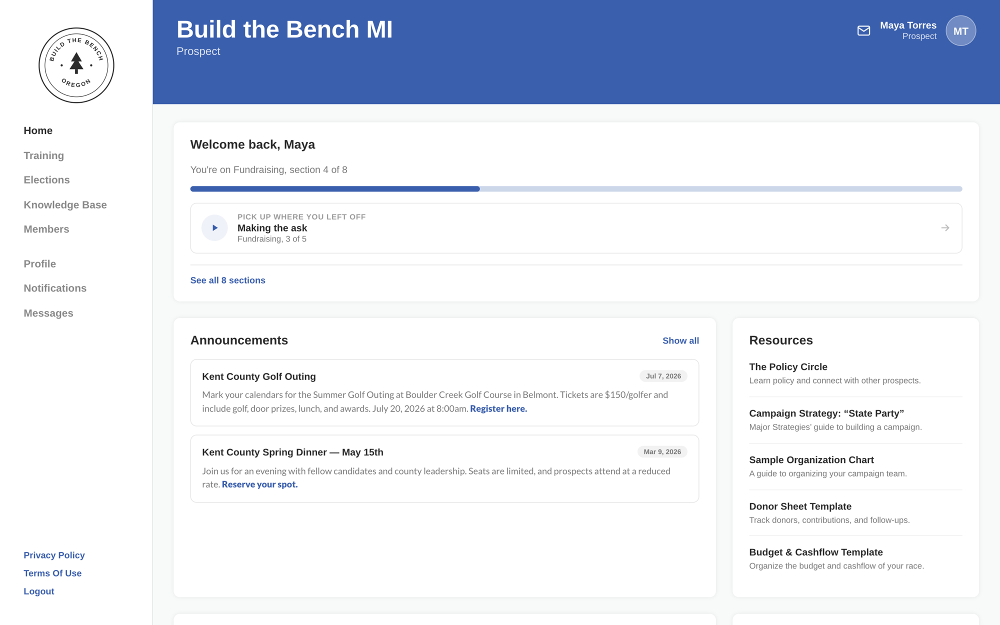
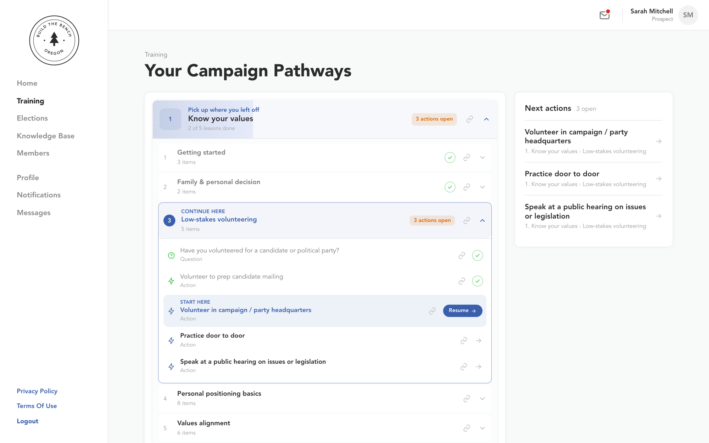
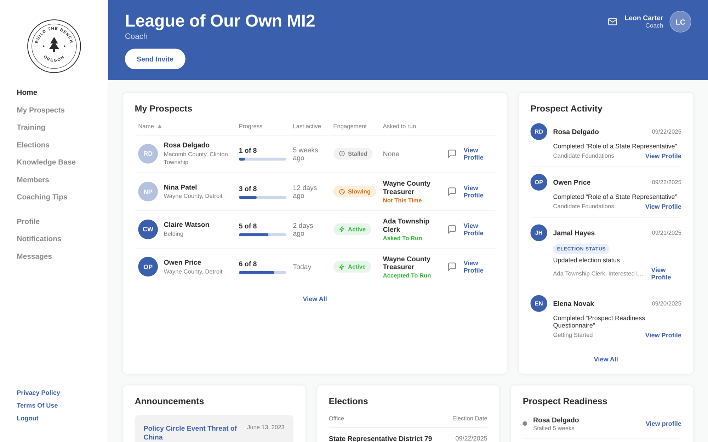
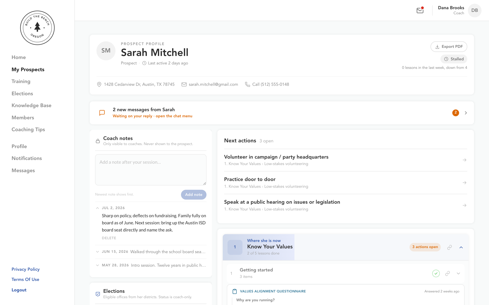

Candidate Pathways · candidate training app
Reworking the app that trains first-time political candidates around one question: what actually gets someone to finish the work?
Victoria Reed · Product & UX Design Lead · 2026
Candidate Pathways trains first-time political candidates. They work through videos, hands-on Actions, and reflection questions, leveling up as they go, with a coach watching from the other side.
Organizing content only matters if it gets people from watching to doing. So before we touched a screen, we interviewed the people who live in the app: coaches, champions, and candidates.
What gets a candidate to finish an Action?
Research
Semi-structured, about 45 minutes each, recorded, in June 2026. Each role got its own script: why people do and don't use the app, then a deeper dive on Actions.
Then we lined up what they told us against how the app is built, sorted it into six clusters, and mapped all 164 pieces of content into 8 plain-language phases before cutting it down to a first slice.
One team got so fed up with the level locks, they hacked their candidates straight to level 9 to skip them.
Regroup the content, line it up, ship it. A cleaner march over the same fifty-plus Actions still hits the same wall, and with no way to skip ahead, it builds that wall back.
Levels were never topics, either. Each one held four or five topics inside it, so relabeling them would have been a rename with a nicer font. Killing that idea was the most useful call on the project.
Before anyone sees a lesson, four quick questions shape the plan around them. It takes about two minutes, and there are no deadlines yet.

We regrouped the existing content into plain-language sections and dropped the format silos. The video, the Action, and the question for one topic now sit in the same place.

Answer the question, do the step, hit next. The list on the left shows how far you've come, so a long section never feels endless.
Skipping ahead was the one thing that made the old app bearable, so we kept it and made it official. No gates.
Every Action ends on a real choice: do it now, or save it for later and get a gentle nudge when the timing is right. "I can't do a 12-hour thing right now" stops being the moment someone leaves.

One coach printed progress on paper to keep track, and called it "the failure of our system."
The coach view now answers one question: who's gone quiet, and who to reach out to today.
A coach shouldn't have to dig to find out why someone went quiet. The profile says it up top, in plain words.

Research to design
Personalization. Topics and videos are the stable backbone. Get the backbone right and the personal layer becomes cheap to add, instead of risky.
Right as we locked the plan, a founding customer sent feedback we never asked for:
Our users are too diverse in their experience, timing, and lifestyles to apply them broadly.
Almost line for line, the scope we had already drawn.
Outcomes
Actions started, and Actions finished. The one number the plan answers to: whether people move from watching to doing.
A founding customer's unprompted feedback matched the scope we had already drawn. The whole thesis, in a user's own words.
The first slice reuses what's already built. It's mostly data work, so it moves the number without new screens.
Have a product people sign up for, then stall in? Let's talk.
Try the clickable prototype